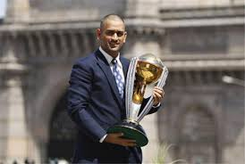
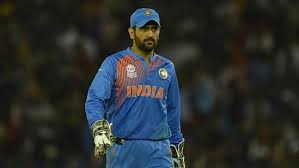
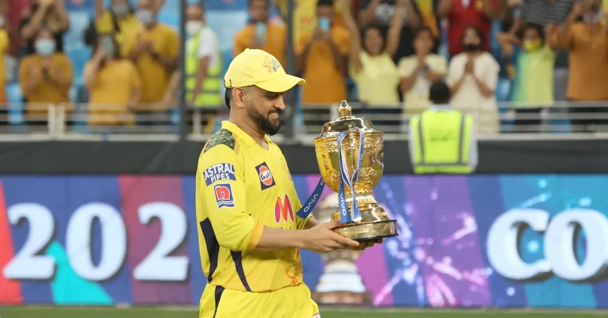
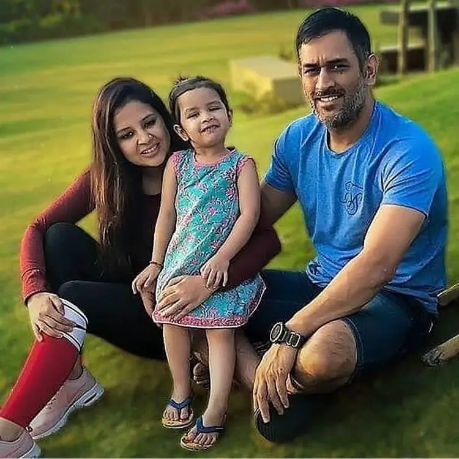

Gallery





The Legend of Indian Cricket
Mahendra Singh Dhoni was born on July 7, 1981, in Ranchi, Jharkhand. He was an athletic child, excelling in various sports like football and badminton. It was his love for cricket, however, that set him on a path to greatness. Dhoni's journey from a small-town boy to the captain of the Indian cricket team is a tale of determination, hard work, and unyielding passion.
MS Dhoni made his international debut in 2004 and quickly established himself as one of the most dynamic players in the game. His fearless batting, especially in the death overs, made him a formidable opponent. His iconic "Helicopter Shot" became a signature move, delighting fans worldwide.
Dhoni's career is studded with numerous unforgettable moments. One of the most significant was his unbeaten 91 in the 2011 ICC World Cup final, where he led India to victory with a match-winning six, forever etching his name in cricket history.
MS Dhoni's leadership is unparalleled. Appointed as captain in 2007, he led India to numerous victories, including the ICC T20 World Cup in 2007, the ICC World Cup in 2011, and the ICC Champions Trophy in 2013. His calm demeanor and ability to remain composed under pressure earned him the nickname "Captain Cool."
Under Dhoni's captaincy, India also achieved the number one ranking in Test cricket for the first time. His ability to nurture young talent and build a cohesive team is a testament to his leadership qualities.
Off the field, Dhoni is known for his humble and down-to-earth personality. He married Sakshi Singh Rawat in 2010, and the couple has a daughter, Ziva. Dhoni is also a bike enthusiast, with a vast collection of motorcycles. His love for the Indian Army is well-known, and he holds the honorary rank of Lieutenant Colonel in the Territorial Army.